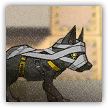
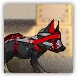

冬灵猎犬Winterwisp Hound
近战 物理；普通 感染生物
|
 |
本地人培养并操纵的猎犬。自古以来都是土著民和早期拓荒者的得力助手。 |
使用数据：游击队猎犬（CR1，XP 200）
额外特性：冬灵血脉 Winterwisp Lineage。冬灵猎犬拥有毒素和寒冷伤害抗性。
冬灵猎犬 Pro | Winterwisp Hound Pro
近战 物理；普通 感染生物
|
 |
本地人培养并操纵的猎犬。作为犬群的头领，自古以来都是土著民和早期拓荒者的得力助手。 |
使用数据：游击队猎犬 Pro（CR2，XP 450）
额外特性：冬灵血脉 Winterwisp Lineage。冬灵猎犬 Pro 拥有毒素和寒冷伤害抗性。